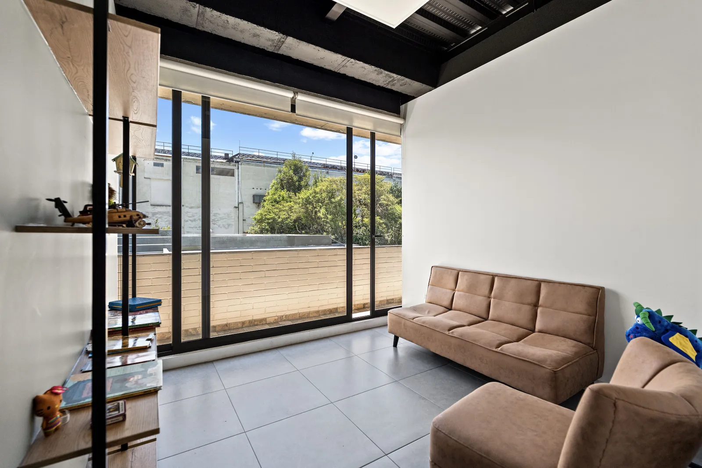

Clínica dental en el corazón del valle, sector El Nacional (Edificio Natura). Al servicio de Cumbayá, Tumbaco y La Primavera, con la misma tecnología y especialistas de Dentimagen.

Profilaxis y control periódico para mantener tu salud bucal en el valle.
AgendarAtendemos a Cumbayá, Tumbaco, La Primavera y todo el valle con la misma calidad y tecnología de Dentimagen, en un ambiente familiar y sin estrés.
Sector El Nacional, cerca de Tumbaco, La Primavera y Lumbisí, con acceso por la Interoceánica.
El mismo equipo certificado de Dentimagen, ahora más cerca de ti.
Escáneres y diagnóstico digital idénticos a los de la sede norte.
Un espacio cálido pensado para adultos y niños del valle.

| Lun – Vie | 9:00–13:00 · 14:00–18:30 |
| Sábado | 9:00 – 17:00 |
| Domingo | Cerrado |
Por fin un dentista de calidad sin salir del valle. Mi ortodoncia avanza perfecto y la atención es muy puntual.
Llevo a mis hijos a la sede de Cumbayá. El trato con los niños es excelente y el ambiente es muy cálido.
Me hice un implante en Cumbayá y el resultado fue impecable. Agradezco no tener que ir hasta el norte.
Sin desplazarte hasta Quito y con la calidad de nuestros especialistas. Escríbenos por WhatsApp y agenda en la sede Cumbayá.